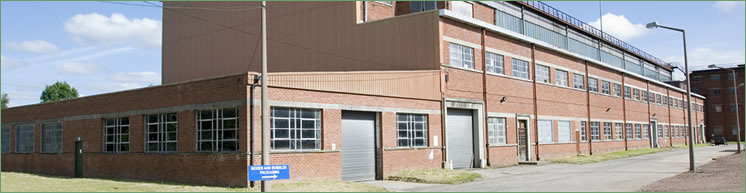
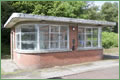
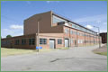

Pomathorn Mill
 |
{kind=link}
  The building of Pomathorn Mill still dominates the skyline of Penicuik. It was built as an offshoot to Valleyfield Mill and relied on Valleyfield for water, steam and power. Construction work started in 1956 with the mill producing its first paper in 1959.It started with one large modern papermaking machine, but the building had room to install a second one. Sadly, instead of expanding, it closed 15 years later in 1975. |
|||
| One of the drawbacks of building the new paper machine on a site high above Valleyfield was that all the water, steam and power had to be transported or transmitted there from the main facilities at Valleyfield itself, and the reels of paper produced had to be transported down to Valleyfield to be cut and sorted. This obviously added to the production costs. The new machine was certainly one of the most modern in the country, and the layout of the chemical and stock preparation sections was well planned. However, some of the machinery, such as the beaters, and the stock screening equipment was outdated, and the top speed of the paper machine at 750 ft/min. was about 30% down on similar state-of-the-art machines. However, it must be said that despite the above drawbacks, Pomathorn should have had the capability to compete with and outlast all or most of the paper machines in Scotland making similar products. The reason it didn’t would appear to be due to the take-over of Alex. Cowan by the Reed Group, who were one of the biggest UK paper manufacturers. Reed owned Spicer, who were a major Paper Merchant, and they were understandably keen to acquire the excellent Sales and Merchanting outlets in the UK and overseas, owned by Cowan, and once this was achieved, they then were prepared to close paper manufacture in Penicuik when the trading conditions got tough, and shift the order book and other assets to their mills in England. In an ideal (Penicuik) world, Cowan should have bought the modern Coating machine from Eskmill, when it shut, and moved it up to Pomathorn, where good quality base paper could be provided, so that high-speed quality coated paper could be produced for a growing market. It is ironic that Donside mill in Aberdeen, which ran successfully until recently, started doing just that, in the mid-60s, despite having no experience whatsoever of coated paper manufacture. |
{kind=link}


Penicuik Historical Society :: Penicuik Town Hall :: 33 High Street :: Penicuik :: EH26 8HS
e-mail :: info@penicuikpapermaking.org
e-mail :: info@penicuikpapermaking.org
© Penicuik Historical Society :: site by Wallace Web Design